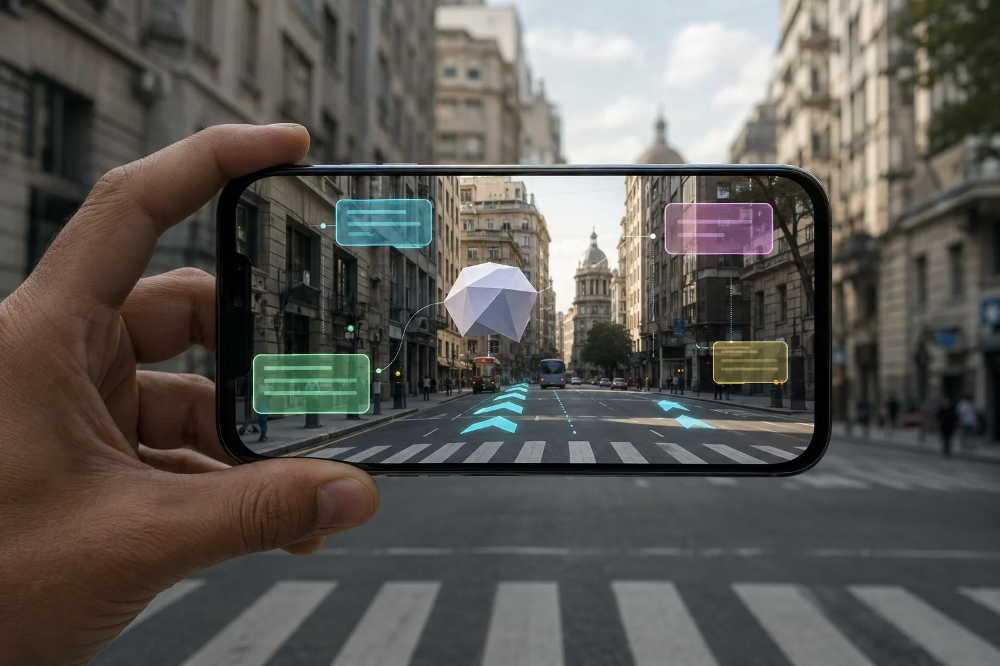

¿Qué es la realidad aumentada? La AR que ya usás sin darte cuenta

La realidad aumentada le agrega información digital al mundo real sin taparlo. Esa es toda la definición. Una cámara —hoy la del celular, algún año la de unos anteojos— mira lo que tenés adelante, entiende qué está viendo y dibuja encima algo que no está ahí. La realidad virtual te cambia el entorno entero por otro; la aumentada te deja la habitación donde está y le escribe arriba. Si lo que te trajo hasta acá es la sopa de siglas (MR, XR), la guía madre las ordena una por una.
Lo más probable es que la hayas usado esta semana. Ponerte orejas de perro en la cámara de Snapchat, o cualquiera de los efectos de Instagram, es realidad aumentada haciendo su trabajo más berreta: encontrar tu cara, seguirla cuando la movés y pegarte el gráfico encima cuadro por cuadro. En Instagram quedaron menos que antes: en enero de 2025 Meta cerró su plataforma Spark y de un día para el otro desaparecieron todos los efectos hechos por creadores de afuera, aunque los de la casa siguen. Pokémon GO cumplió diez años en julio de 2026 y funciona igual que el primer día. Y si alguna vez saliste del subte mirando para cualquier lado y prendiste las flechas de Google Maps —la función que arrancó como Live View y hoy aparece como Lens—, apuntaste la cámara a la calle y viste un cartelón flotando sobre la vereda: en Buenos Aires anda desde 2023. Apuntá la app Medidas del iPhone a una mesa y te tira las dimensiones sin cinta métrica. Todo eso es AR y no te costó un peso.
Lo difícil no es dibujar el bicho. Un motor de videojuegos de 2005 dibujaba un Pikachu sin despeinarse. Lo difícil es que el bicho quede clavado en el mismo metro cuadrado de vereda mientras vos le das la vuelta. El celular lo consigue mezclando decenas de veces por segundo lo que ve la cámara con lo que le dicen el giroscopio y el acelerómetro: busca puntos que se distingan —la punta de una mesa, una rajadura en la baldosa— y arma un mapa rústico del lugar que después reconoce cuando te movés. Eso es, en criollo, ARKit en iPhone y ARCore en Android. Los iPhone y iPad Pro suman un escáner LiDAR que mide distancias de verdad, y por eso les sale mejor meter una silla virtual detrás del sillón real en vez de encima. Cuando el objeto de golpe se te va patinando por el piso, es ese mapa que perdió la referencia.
Lejos del jueguito, la tecnología está laburando en serio. En cirugía de columna, el sistema xvision de Augmedics —el primero con guía AR autorizado por la FDA— le proyecta al cirujano un modelo 3D de la anatomía del propio paciente en la línea de visión, así coloca los tornillos mirando al paciente y no a un monitor que está a tres metros. La empresa reporta más de 13.000 pacientes y más de 71.500 tornillos en 26 estados de Estados Unidos, con 97 a 100% de precisión de colocación en las series publicadas. En la industria la idea es la misma pero más barata: las instrucciones de armado pegadas a la máquina y un experto remoto que dibuja una flecha sobre lo que la cámara del técnico está mirando. Ese rubro se comió un golpe cuando Microsoft cortó la producción de las HoloLens 2 en 2024 y en 2025 confirmó que se iba del hardware AR: el software quedó buscando visor ajeno donde correr.
Y acá viene la parte honesta. Los anteojos de las publicidades —finitos, comunes, con hologramas flotando sobre la mesa de la cocina— no son algo que puedas ir a comprar. Los Ray-Ban Display de Meta, a US$799, son una pantallita en el cristal derecho que muestra mensajes e indicaciones, no hologramas; desde septiembre de 2025 se venden solo en Estados Unidos, en local y con turno, y en enero de 2026 Meta frenó el desembarco en Reino Unido, Francia, Italia y Canadá sin fecha nueva. IDC calculó unas 15.000 unidades vendidas en el primer trimestre de 2026. Snap fue más lejos y sacó AR de la buena: los Specs abrieron preventa el 16 de junio de 2026 a US$2.195 y empiezan a llegar entre septiembre y noviembre, a tres países nada más, con 51 grados de campo visual y unas cuatro horas de batería. Reales, impresionantes y al precio de un auto usado. Mientras tanto, los anteojos que sí se venden —los Ray-Ban Meta, desde US$379— no tienen pantalla, y en Latinoamérica el único país con venta oficial es México.
Así que el veredicto va en contra del marketing: la realidad aumentada no es el futuro, hace diez años que la tenés en el bolsillo. Lo que no está listo son los anteojos. Si lo que querés de verdad es meter objetos digitales en tu living hoy, el aparato que lo hace es un visor con passthrough, y esa ya es otra pregunta: el quiz te la contesta en un minuto.
Respondé 7 preguntas rápidas y encontrá el visor que encaja con vos en 60 segundos.
Hacer el test de VR Finder →Los precios y las especificaciones pueden cambiar. Mirá nuestra Política de privacidad.